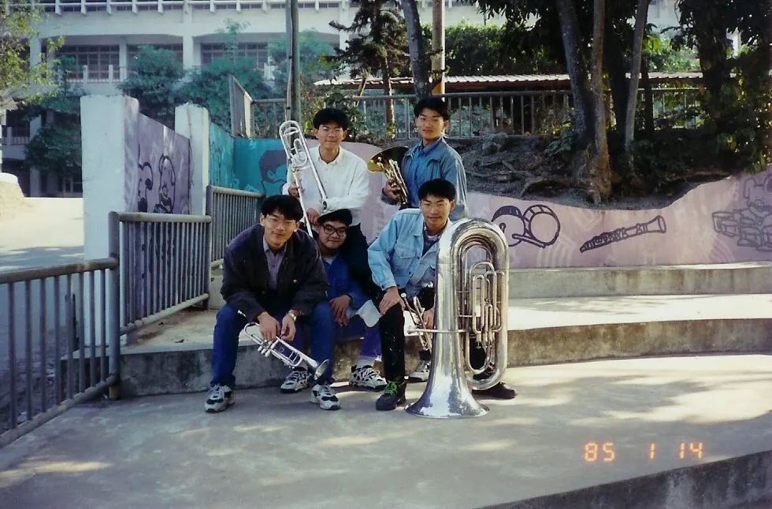
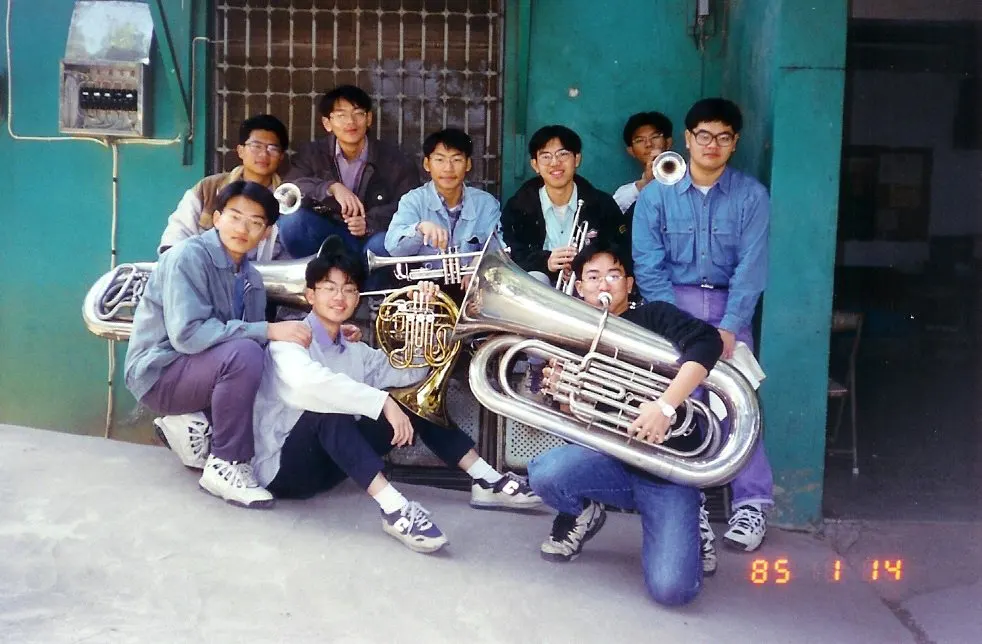
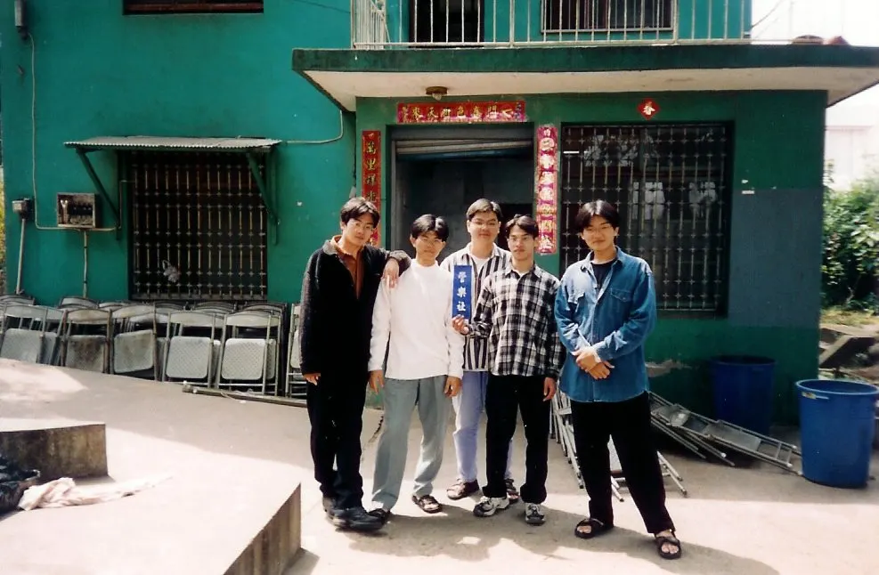
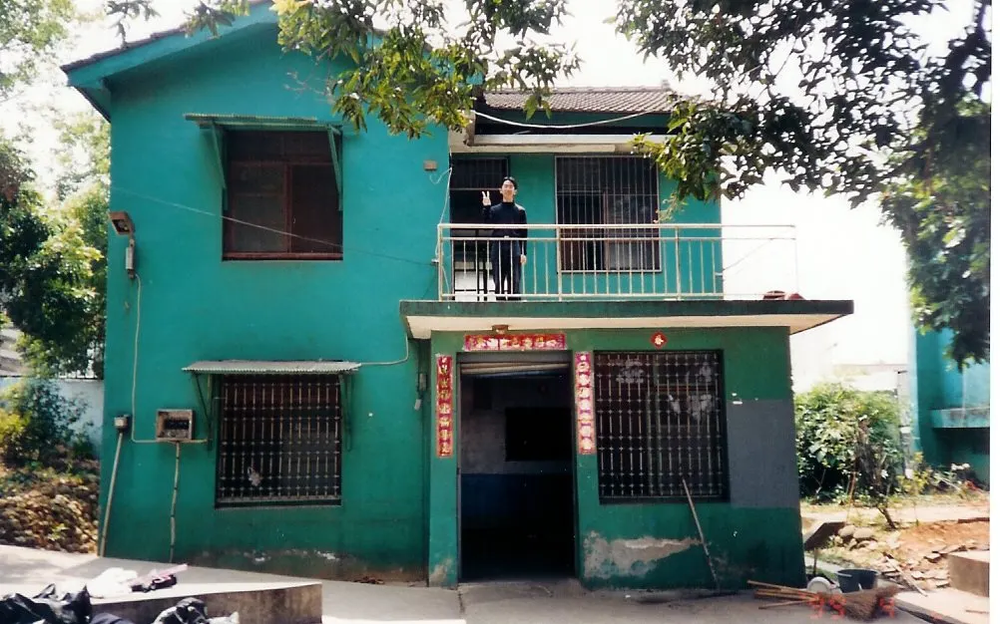

校友吳松澤（8241，法國號）分享了五張保存多年的照片。從 1994 年校友演奏會的法國號聲部、1996 年隊部裡的銅管五重奏，到 1999 年綠色小屋拆除前的回訪，幾個不同年份的畫面，串起同一群嘉中管樂人一起演奏、一起留影，也一起記住隊部的日子。
1994：在校友演奏會的法國號聲部相見
第一張照片拍於 1994 年 8 月 21 日。本站現有的歷屆資料將這一天記為第 10 屆聯合音樂會，演出地點為嘉義高中樹人堂；當年的指揮、曲目與完整團員名單仍等待更多史料補充。照片則清楚留下了法國號聲部的六位夥伴，吳松澤在隊友之間，為這場演出補上一張珍貴的聲部合影。
同樣在 1994 年，嘉義市青少年聯合管樂團（今嘉義市管樂團前身）的創團招生曾在嘉中隊部進行。這張聲部照所呈現的，不只是一場演出前後的相聚，也讓人看見當時嘉中管樂隊與嘉義管樂社群彼此交會的年代。
1996：五種銅管聲音，在隊部裡排成一張照片
1996 年 1 月 14 日，82 級夥伴留下銅管五重奏的合照：兩支小號、法國號、長號與低音號，剛好構成銅管五重奏最經典的五個位置。照片中，前排左起為小號朱良斌、小號曾彥運與低音號黃忠文；後排左為長號范國恩，右為法國號吳松澤。依投稿照片檔案敘述，當時主要拍攝者應為小號董永隆。

五重奏拍照後，大家沒有立刻散去，而是和正在隊部的「2 字頭」同學再拍一張。畫面前排左起為吳松澤、董永隆、陳寬來；後排左起為何宣慶、朱良斌、曾彥運、柳瑞宗、范國恩、黃忠文。五把樂器把人聚在一起，隊部則把不同時刻的夥伴留在同一個畫面裡。

1999：在綠色小屋拆除前，回來好好道別
1999 年 4 月 6 日，得知隊部「綠色小屋」即將拆除，82 級同學相約回來留影。對嘉中管樂人來說，隊部從來不只是放樂器或排練的空間；那裡裝著練習、等待、聊天，以及一屆又一屆學長學弟相遇的日常。這些回訪照片沒有舞台與觀眾，卻特別真實地保存了大家對隊部的感情。


五張照片，繼續被看見的傳承
從一個法國號聲部的位置，到一組銅管五重奏，再到回到綠色小屋前的集體留影，照片裡每一次並肩而立，都讓人想起嘉中管樂最重要的事：樂聲會停下來，場地也會改變，但一起練過、一起演過的人，仍會在記憶裡認出彼此。
這五張影像已收錄於本站影像館，可分別從1994 校友演奏會法國號組、1996 高中五重奏與綠色小屋拆除前相簿尋找；完整影像館瀏覽依網站規則需社員登入。
感謝吳松澤校友提供與整理這批老照片。若您也保存了早期演出節目冊、名單、錄音或照片，歡迎透過官方粉絲專頁與我們聯繫，讓更多尚待補上的嘉中管樂記憶，能在網站上被好好保存。
本文依吳松澤（8241）提供的五張照片及其檔名說明整理；1994 年聯合音樂會日期與場地另依本站歷屆資料頁。人物、演出與場地的其他細節，仍以後續可確認的史料為準。